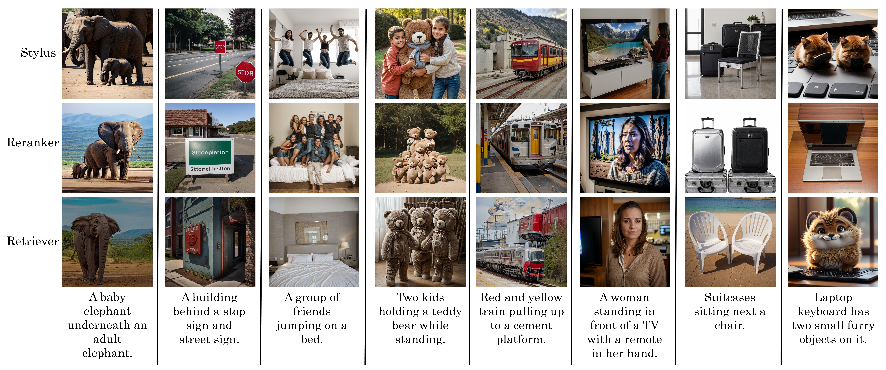

Stylus: Automatic Adapter Selection for Diffusion Models

Stylus automatically selects and composes relevant adapters given a user's prompt, generating beautiful and creative images that are tailor-made for each user.
Stylus automatically selects and composes relevant adapters given a user's prompt, generating beautiful and creative images that are tailor-made for each user.
Beyond scaling base models with more data or parameters, fine-tuned adapters provide an alternative way to generate high fidelity, custom images at reduced costs. As such, adapters have been widely adopted by open-source communities, accumulating a database of over 100K adapters—most of which are highly customized with insufficient descriptions. To generate high quality images, this paper explores the problem of matching the prompt to a Stylus of relevant adapters, built on recent work that highlight the performance gains of composing adapters. We introduce Stylus, which efficiently selects and automatically composes task-specific adapters based on a prompt's keywords. Stylus outlines a three-stage approach that first summarizes adapters with improved descriptions and embeddings, retrieves relevant adapters, and then further assembles adapters based on prompts' keywords by checking how well they fit the prompt. To evaluate Stylus, we developed StylusDocs, a curated dataset featuring 75K adapters with pre-computed adapter embeddings. In our evaluation on popular Stable Diffusion checkpoints, Stylus achieves greater CLIP/FID Pareto efficiency and is twice as preferred, with humans and multimodal models as evaluators, over the base model.
Our method consists of three components: the Refiner, Retrieval, and Composer.

Refiner - The refiner employs a two-stage approach to compute an adapter's task description and embeddings. First, the refiner's vision-language model (VLM) takes in an adapter's model card (e.g. Studio Ghibli LoRA)—example images, associated prompts, and an author-provided description—and outputs an improved adapter description. Second, the encoder converts an adapter's description into a lookup embedding. This process is repeated for all adapters in our database.
Retriever - Similar to retrieval-based methods (e.g. RAG), the retreiver encodes a user's prompt and fetches the top K closest adapters in the embedding space (e.g. cosine similarity).
Composer - The composer serves a dual purpose: it segments the prompt into tasks from a prompt's keywords and assigns retrieved adapters to tasks. This implicitly filters out adapters that are not semantically aligned with the prompt and detects those likely to introduce foreign bias to the prompt through keyword grounding. The composer is a long-context LLM that takes in the top K adapter descriptions (from the retriever) and outputs a mapping from a prompt's tasks to relevant adapters.
Human Evaluation - Stylus achieves higher human preference scores (~2x) over two popular Stable Diffusion checkpoints, Realistic-Vision-v6 for realistic images and Counterfeit-v3 for anime/cartoon images, and datasets, Microsoft COCO and PartiPrompts.
Automatic Metrics (Left) - For the COCO dataset, Stylus shifts the CLIP/FID pareto curve towards greater efficiency, improving textual alignment, visual fidelity, and image diversity across prompts.
GPT-4V as a Judge (Right) - Barring ties, Stylus is twice as preferred for visual fidelity and ties the base model for textual alignment.

Given the same prompt, Stylus (left) generates more diverse and comprehensive sets of images than that of existing Stable Diffusion checkpoints (right).

Image Translation - Stylus chooses relevant adapters that better introduce new themes and elements into existing images.

Inpainting - Stylus chooses adapters than can better integrate new characters, objects, or concepts within an inpainted mask.

Stylus outperforms all other retrieval-based methods, which choose adapters than either introduce foreign concepts to the image or override other concepts in the prompt, which reduces textual alignment.
Stylus is generally practical and introduces a small 12(s) overhead on top of the base image generation process. This overhead remains the same as batch size increases.

@misc{luo2024stylus,
title={Stylus: Automatic Adapter Selection for Diffusion Models},
author={Michael Luo and Justin Wong and Brandon Trabucco and Yanping Huang and Joseph E. Gonzalez and Zhifeng Chen and Ruslan Salakhutdinov and Ion Stoica},
year={2024},
eprint={2404.18928},
archivePrefix={arXiv},
primaryClass={cs.CV},
}
We thank Lisa Dunlap, Ansh Chaurasia, Siyuan Zhuang, Sijun Tan, Shishir Patil, Tianjun Zhang, and Joey Gonzalez for their insightful comments and discussion. We thank Google Deepmind for funding this project, providing AI infrastructure, and provisioning Gemini endpoints. Sky Computing Lab is supported by gifts from Accenture, AMD, Anyscale, Google, IBM, Intel, Microsoft, Mohamed Bin Zayed University of Artificial Intelligence, Samsung SDS, SAP, Uber, and VMware.
Explore the forefront of image/video model serving and building AI agents with us! We're on the hunt for talented, motivated, and creative individuals eager to tackle exciting research challenges and opportunities in this dynamic field. Interested? We'd love to hear from you. Please send your CV to Michael Luo. Join us and turn your passion into impact!